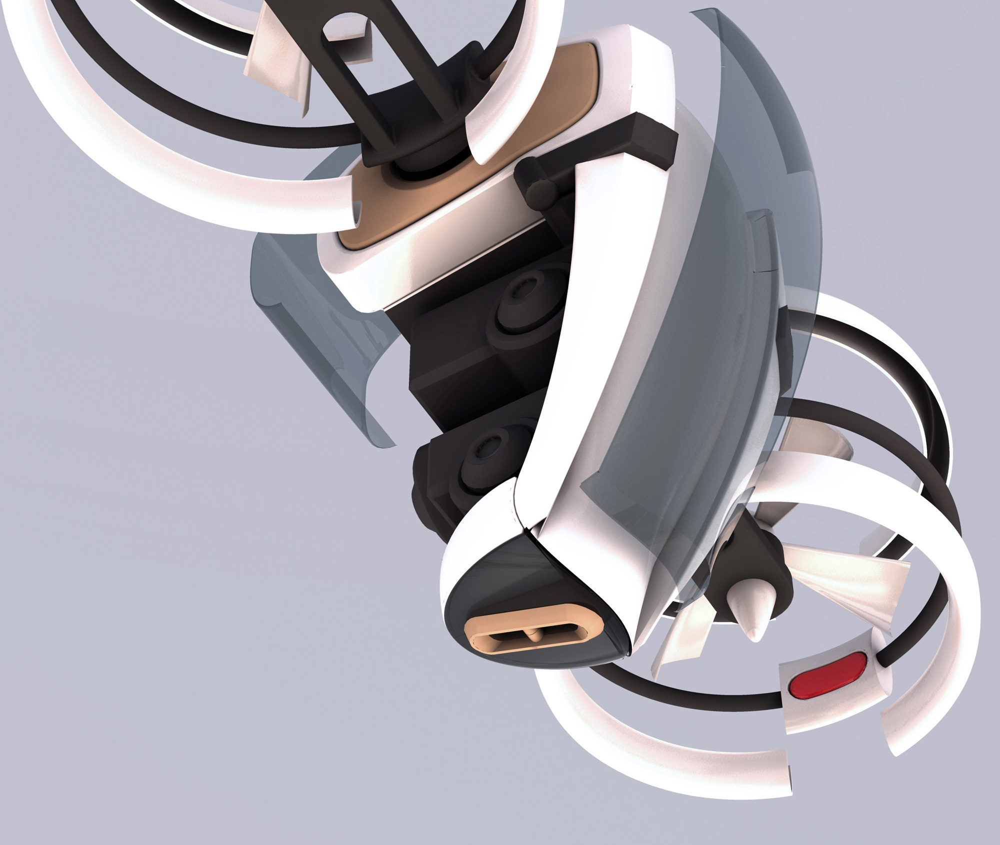
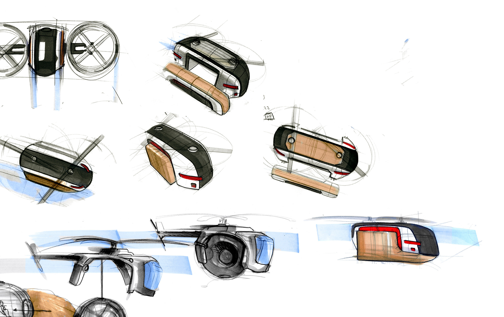
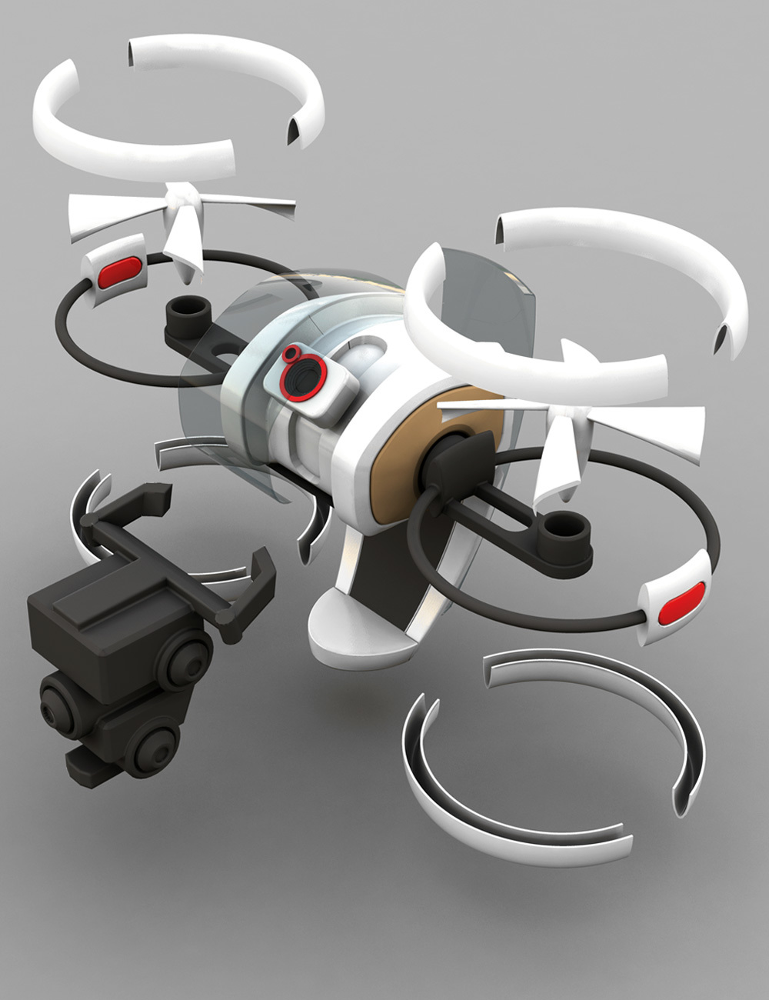
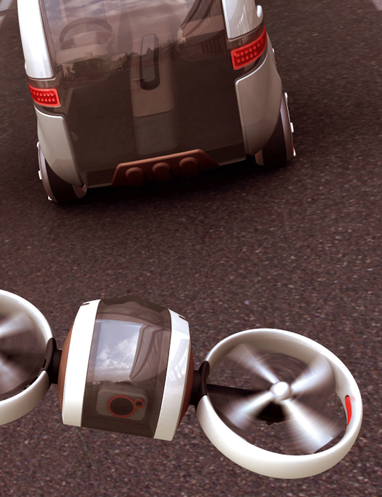
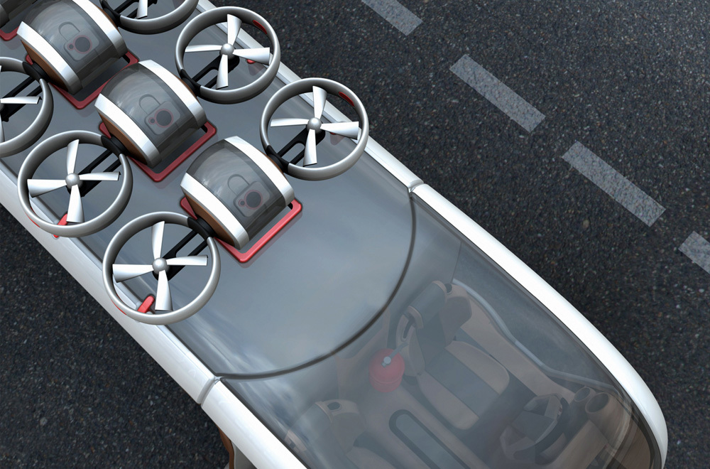
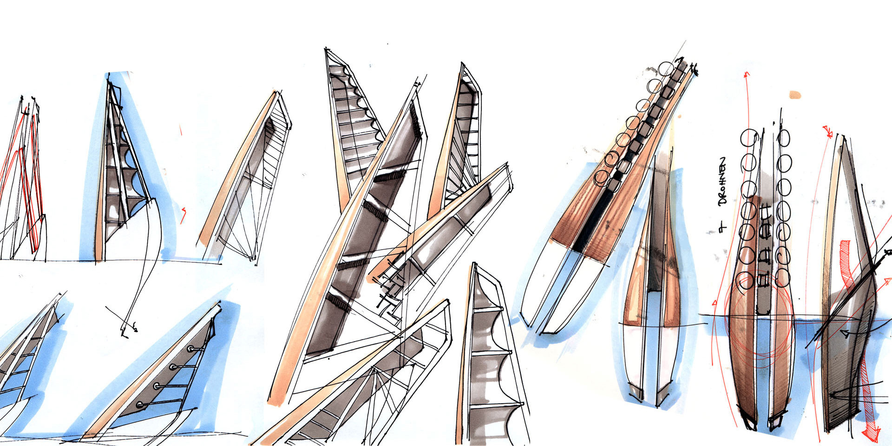
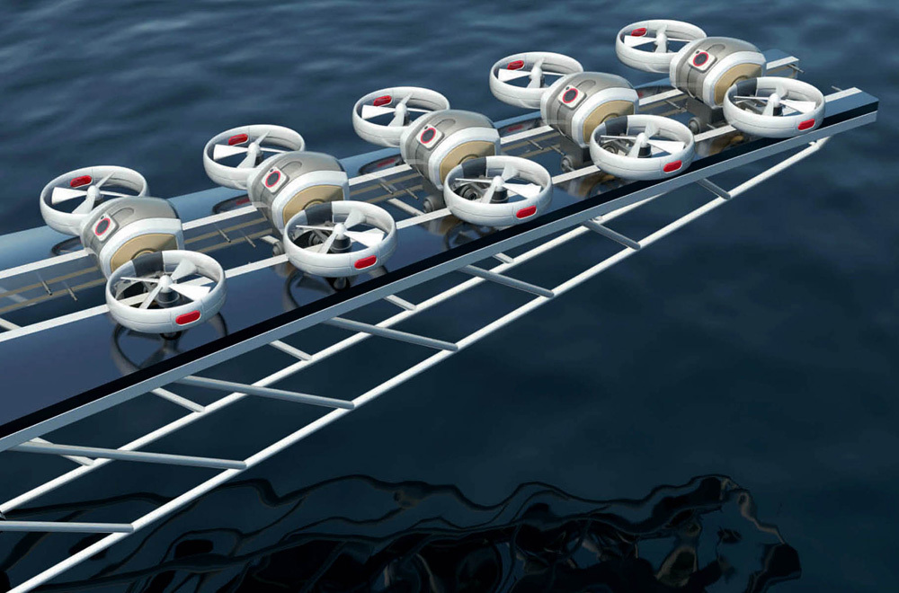
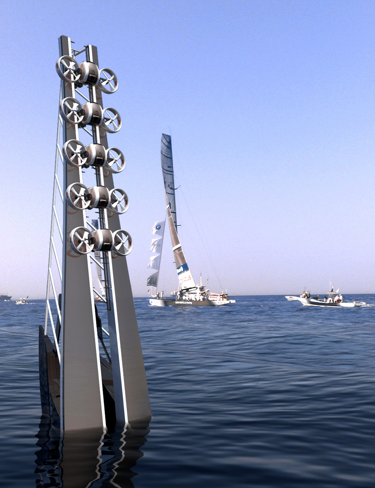
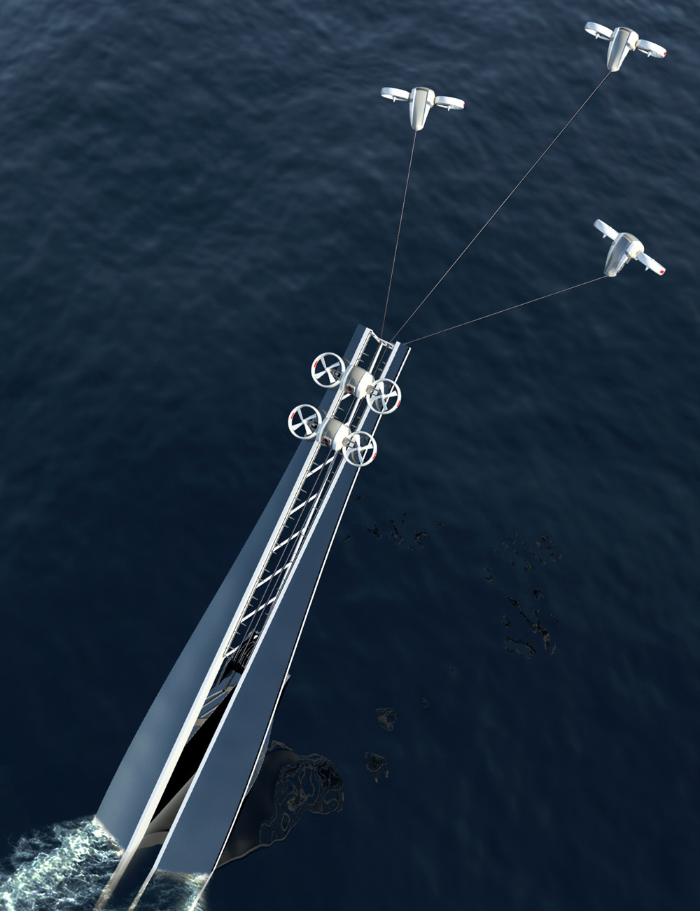

Drone









This project was done in teamwork together with Florian Mack. Our idea was to create a remote-controlled part of a team during sport events. The drone supports the team and records amazing pictures for the audience with its camera. In addition to that, the drone has an advertising function. First of all it is built for racing events on water or land. The drone should give the audience the feeling to be part of the race. Especially on long distance races, where it is difficult for the spectator to get close to the athletes and teams, like the Tour de France or the America‘s Cup.
Dieses Projekt entstand zusammen mit meinem Studienkollegen Florian Mack. Die Idee war ein ferngesteuertes Teammitglied für Sportereignisse zu schaffen. Die Drone soll das Team unterstützen, dem Zuschauer per Kamera spannende Bilder liefern und Werbeträger sein. Ausgangspunkt sind Rennsportarten zu Wasser und zu Land. Insbesondere solche, in denen lange Strecken zurückgelegt werden, und bei denen es schwer ist als Zuschauer dem Geschehen nahe zu kommen, wie die Tour de France und der Americas Cup.